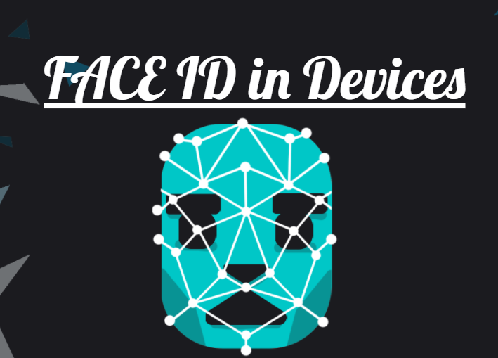

Opportunities in Facial Recongnition
Fast and Non-Invasive Identity Verification
The advantage of face recognition lies in its naturalness and the characteristic of being undetected by the tested individual. The so-called naturalness means that the identification method is the same as the biological characteristics used by humans for individual identification. For example, in face recognition, humans can distinguish and confirm identities through observation and comparison. In addition, natural recognition includes iris recognition, voice recognition, body shape recognition.(Marr, 2021) indicates while fingerprint recognition and iris recognition are not natural, because humans or other creatures do not distinguish individuals by such biological characteristics. The characteristic of being undetected is also very important for an identification method, which makes the identification method not objectionable, and it is not easy to be deceived because it is not easy to attract people's attention. Face recognition has this feature. It completely uses visible light to obtain facial image information. Unlike fingerprint recognition or iris recognition, it needs to use an electronic pressure sensor to collect fingerprints or use infrared to collect iris images. These special collection methods are easy Being noticed by others makes it more likely to be deceived by disguise.
(Doe, 2021) explains face recognition is an emerging biometric recognition technology. Compared with iris recognition, fingerprint scanning, palm scanning and other technologies, face recognition technology has unique advantages in application: easy to use and high user acceptance. Face recognition the technology uses a universal camera as an identification information acquisition device to complete the identification process in a non-contact manner without the identification object being noticed. Intuitiveness highlights the use of facial recognition technology based on human facial images, and human faces are undoubtedly the most intuitive source of information that can be distinguished by the naked eye, which is convenient for manual confirmation and auditing, and conforms to the laws of human cognition. The recognition accuracy is high, and the speed is fast. Compared with other biological recognition technologies, the recognition accuracy of face recognition technology is at a higher level, and the false recognition rate and rejection rate are lower.
Not easy to counterfeit in applications with high security requirements, face recognition technology requires that the recognition object must be at the recognition site in person, and it is difficult for others to counterfeit. The unique active discrimination ability of face recognition technology ensures that others cannot deceive the recognition system with inactive photos, puppets, and wax figures. This is difficult to achieve with biometric technology such as fingerprints. For example, using the severed finger of a legitimate user can impersonate the identity of a legitimate user and make the identification system undetectable. The equipment used for face recognition technology is general PCs, cameras, and other conventional equipment. Since computers and closed-circuit television monitoring systems have been widely used, it is not necessary for most users to use face recognition technology. Many special equipment, which not only protects the user's original investment, but also expands the functions of the user's existing equipment and meets the user's security requirements (Tillman, 2021).
The basic information is easy to obtain. The basis used by the face recognition technology is face photos or face images taken in real time, so it is undoubtedly the easiest to obtain. Low cost and easy to popularize. Because the face recognition technology uses conventional general-purpose equipment, the price is within the acceptable range of general users. Compared with other biometric technology, face recognition products have a high-performance price. Compare. In a nutshell, face recognition technology is a high-precision, easy-to-use, high-stability, difficult-to-fake, and cost-effective biometric recognition technology, which has extremely broad market application prospects.
The amount of energy, information, or power that a person or thing produces. It comes from a machine or system.
With the help of facial recognition technology, companies could easily control access to facilities and employees without long lines.
Face recognition technology is also more secure since it doesn't require users to contact them. Another advantage of this technology is that it eliminates the need to remember passwords and other cumbersome details (Hall, 2017).
With the use of facial recognition technology, companies will be able to control access to their facilities without having to wait in long lines.
Applications related to security are not limited to physical security. They can also be applied to various industries such as banking.
(1) Help find the missing person
Law enforcement agencies use facial recognition to find missing people, and they also use it to find missing children. When facial recognition is combined with aging software that shows what a child will look like years from now, it can even help find people who have been missing for many years.
(2) Protect companies from theft
when the thief enters the store, the business owner uses facial recognition software and security cameras to identify the known or suspicious thief. This pre-emptive security measure helps prevent shoplifting. Since people are less likely to commit crimes when they know they are being monitored, this technology also serves as a deterrent.
(3) Strengthen safety measures
Facial recognition also helps to improve safety and security. For many years, facial recognition has been a routine part of airport security checks, helping to identify criminals and potential threats to airlines and passengers. Banks and other institutions also use facial recognition to prevent fraud because this technology can identify people previously accused of crimes and alert the banks. If facial recognition technology marks a customer, the bank knows to double-check that person's business in the bank.
(4) Reduce the number of contact points
Compared with other types of security measures such as fingerprints, facial recognition requires fewer human resources. It also does not require physical contact or direct human interaction. Instead, it uses artificial intelligence to make it an automatic and seamless process. It also limits points of contact when opening doors and unlocking smartphones, withdrawing money from ATMs, or performing other tasks that usually require a PIN, password, or key.
(5) Make shopping more efficient
The convenience of facial recognition also transcends the realm of security. No need to use cash or credit card to shop in the store, facial recognition technology can recognize your face and credit the goods to your account.
(6) Improve organization photos
Facial recognition can also tag photos in your cloud storage through Apple or Google. This makes it easier to organize, find and share your photos. It also played a role in recommending hashtags on Facebook.
(7) Improve medical treatment
One surprising use of facial recognition technology is to detect genetic diseases. By studying subtle facial features, in some cases, facial recognition software can determine how specific genetic mutations cause specific syndromes. This technology may be faster and cheaper than traditional genetic testing.
Touch ID was relatively quick at unlocking the iPhone but it doesn't compare to its updated brother, Face ID. When someone raises their iPhone in their hand and looks at it the phone unlocks just about automatically, with no real issues no matter the angle. It also brings that speed to logging into applications and making purchases on the mobile device. In an era that's all about speed and information right at your fingertips, Face ID certainly moves in the right direction where general haste is concerned (Gargaro, 2021).
Last edited 20/10/2021
by Teddy Xu.
thanks to W3C for tutorial and adapted code from Style Examples
also thanks to WDN for HTML and CSS resources and any adapted code snippets from Mozilla Developer Network